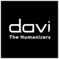
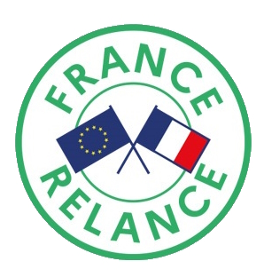

Transfert de technologie et valorisation
Voici une liste non exhaustive des activités partenariales réalisées:
En cours
Contrat de collaboration 102-103 - 2023
102-103 lance la première plateforme qui vous accompagne pour piloter, sourcer et développer durablement votre environnement de travail. 102-103 vous propose une plateforme innovante qui permet d’analyser votre performance métier, de simuler vos coûts d’organisation, de piloter vos processus d’appels d’offre et de favoriser la collaboration entre donneurs d’ordre et fournisseurs.
Projets passés
OCRE Google Cloud Plateform - 2022
Projet européen OCRE Google Cloud intitulé DEEP LEARNING for GRAPHS pour une montant de 250k€ de Cloud Google (2022) et le développement d'IA hybride (symbolique et subsymbolique) (Vertex AI, Neo4J, Kubernetes, etc.).
Plan France Relance DAVI - 2022
  DAVI est un éditeur de logiciels en mode SaaS qui dispose des expertises dans les domaines de l’IA, de l’Affective Computing et des IHM. Ses missions : Transformer la relation digitale en relation humaine. Rendre plus humaine, plus fluide et plus performante la relation entre la machine et l’homme, entre les systèmes d’information et leurs utilisateurs, entre une entreprise et ses clients ! Pour mener à bien ses missions, DAVI dispose des compétences diverses : ingénieurs IA, Data Scientists, Experts TALN, infographistes 3D, designers UI-UX, psychologues, développeurs full stack, développeurs logiciel, PhD en ingénierie cognitive. Ce projet vise le développement d'IA hybrique capable de produire du texte en langage naturel à partir de graphe de connaissances pour les agents conversationnels.
Plan France Relance avec Actualis - 2021
L’entreprise Actualis est spécialisée dans la production et la distribution de revues de presse. Les résultats des travaux de recherche et développement réalisés en 2015 ont permis la création de la plateforme FIRST ECO https://www.firsteco.fr/. Ce système de recommandation développé dans le cadre d’un contrat de collaboration entre la société et le laboratoire offre aujourd’hui une solution technique personnalisée et personnalisable d’accès aux actualités. Ce projet de recherche et développement eScope vise à produire une solution technique d’apprentissage et traitement automatique du langage à base de réseaux de neurones profonds (LSTM, Transformers) sur des données séquentielles. Le résultat se matérialisera par un processus d’identification de sources d’informations pertinentes et par la classification de ces sources par les algorithmes. Ce financement concerne l'action 1 et l'action 4.
Projet Géolys
Ce projet est une collaboration dans le cadre d'un contrat de comaturation entre le laboratoire Le2i et la société Tévolys dont l'objet est le développement d'une plateforme de géoservice indoor.
Projet S-HMC RecSys
En partenariat avec l'entreprise Actualis localisée à Fontaine-les-Dijon, l'objet de ce projet est le développement d'un Système de Web Mining pour le croisement d’informations économiques sur Internet.
Projet CONTINUUM
En partenariat avec la Direction Générale des Armées (DGA), ce projet vise la formalisation d'un modèle sémantique spatiotemporel pour capturer la dynamique des environnements, Bourse CIFRE, 2012-2015.
Projet FirstPro'Fil
En partenariat avec l'entreprise Actualis localisée à Fontaine-les-Dijon, ce projet concerne le développement d'un système de recommandation de revues économiques personnalisées structuré à l'aide d'ontologies. Contrat d’étude et Bourse CIFRE sur la période 2011-2014.
Projet 3, 2, 1 Côte d’Or
En partenariat avec l’agence Côte d’Or Tourisme, ce projet est une collaboration de recherche et développement pour le développement d’une application pour smartphone de géoservice touristique vise l'optimisation d'un parcours touristique, 2009-2011.
Prestations de Conseils en Technologies (PCT)
Financés par l’agence Bourgogne Innovation, les PCT permettent d'aider les premiers pas à l'innovation des TPE/PME bourguignonne afin d'aider les entreprises à définir une stratégie de recherche et développement. J'ai réalisé à ce jour une dizaine de prestations au cours de la dernière décennie.